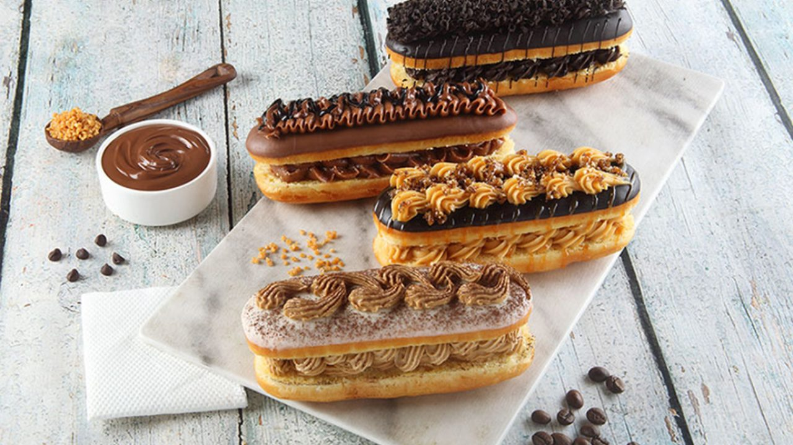

Eclair

An éclair is a pastry made with choux dough filled with a cream and topped with a flavored icing.
Following are the ingredients required to make the best eclairs:
- 1/2 cup butter
- 1 cup water
- 1 cup all-purpose flour
- 1/4 teaspoon salt
- 4 eggs
- 1 (5 ounce) package instant vanilla pudding mix
- 2 cups cold milk
- 1 cup heavy cream
- 1/4 cup confectioners' sugar
- 1 teaspoon vanilla extract
- 2 (1 ounce) squares semisweet chocolate
- 2 tablespoons butter
- 2 tablespoons butter
- 2 tablespoons butter
- 3 tablespoons hot water
To prepare this delicious treat follow the instructions below:
- Preheat oven to 450 degrees F (230 degrees C). Grease a cookie sheet.
- In a medium saucepan, combine 1/2 cup butter and 1 cup water. Bring to a boil, stirring until butter melts completely. Reduce heat to low, and add flour and salt. Stir vigorously until mixture leaves the sides of the pan and begins to form a stiff ball. Remove from heat. Add eggs, one at a time, beating well to incorporate completely after each addition. With a spoon or a pastry bag fitted with a No. 10, or larger, tip, spoon or pipe dough onto cookie sheet in 1 1/2 x 4 inch strips.
- Bake 15 minutes in the preheated oven, then reduce heat to 325 degrees F (165 degrees C) and bake 20 minutes more, until hollow sounding when lightly tapped on the bottom. Cool completely on a wire rack.
- For the filling, combine pudding mix and milk in medium bowl according to package directions. In a separate bowl, beat the cream with an electric mixer until soft peaks form. Beat in 1/4 cup confectioners' sugar and 1 teaspoon vanilla. Fold whipped cream into pudding. Cut tops off of cooled pastry shells with a sharp knife. Fill shells with pudding mixture and replace tops.
- For the icing, melt the chocolate and 2 tablespoons butter in a medium saucepan over low heat. Stir in 1 cup confectioners' sugar and 1 teaspoon vanilla. Stir in hot water, one tablespoon at a time, until icing is smooth and has reached desired consistency. Remove from heat, cool slightly, and drizzle over filled eclairs. Refrigerate until serving.